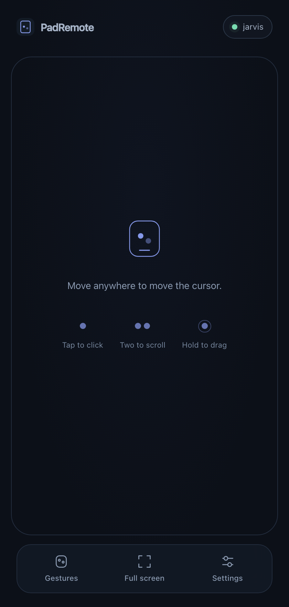
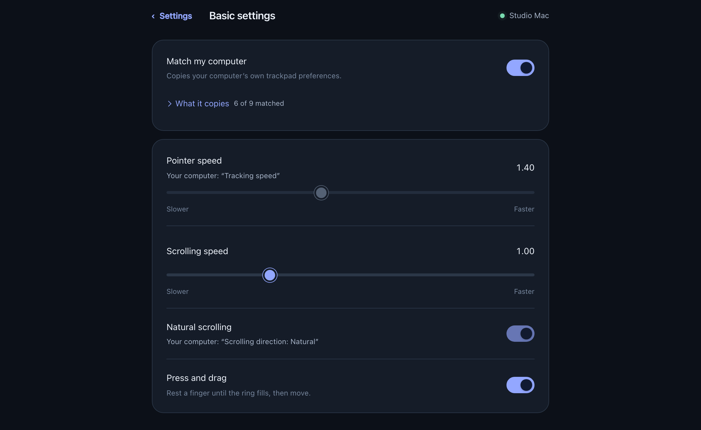

Your phone is
the trackpad.
A wireless trackpad for your Mac, on the device already in your pocket. Nothing to install on the phone.
git clone https://github.com/padremote/padremote
cd padremote && ./install.sh
macOS · open source · nothing leaves your Wi-Fi

Move
One finger anywhere. Tap to click.
Scroll
Two fingers, with momentum and rubber-banding.
Hold to drag
Rest a finger until the ring fills, then select.
It copies your Mac.
PadRemote reads your real trackpad settings twice a second and matches them, so it behaves like the trackpad you already use.
